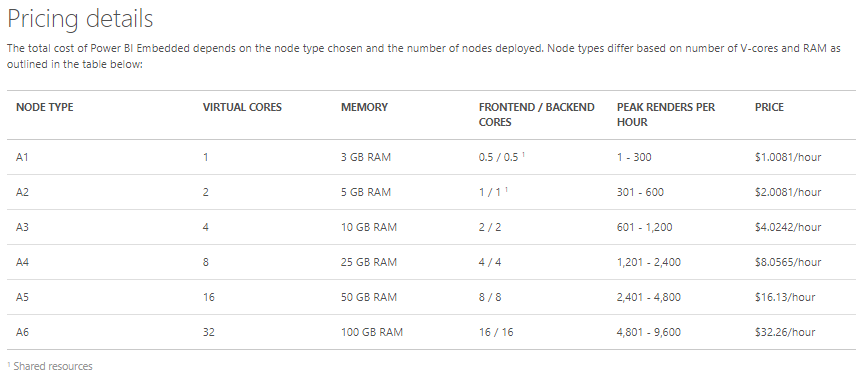
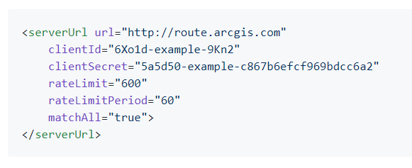
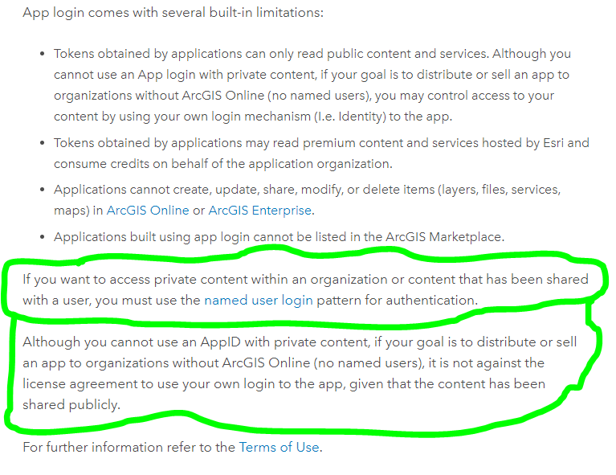

ArcGIS Identity Crisis Part 3
I'm not one to complain without a solution, and the previous blog post The ArcGIS Identity Crisis Part Two, was kind of left open-ended. Some might have walked away thinking, "Oh so Alex wants everything for free, huh?". Not necessarily. I hope that folks at Esri are listening. My beef is on two fronts:
First, Why introduce more middleware betweent the data tier and the web display? What used to be just ArcGIS Server and a Reverse Proxy (for on-prem) is now ArcGIS Server, a Mandatory Portal Installation, and a web adapter. This day-and-age, companies should be striving to pare down middleware, bloat, and create less administrivia for security. This has achieved quite the opposite. I don't see this getting any slimmer. In recent product announcements, they’re just making it easier to orchestrate the install of this bloat via Jupyter notebooks and/or chef automation. No thanks. Speed eating is still eating too much. Regardless if it's at speed. The bloat persists.
My second beef is with the lack of options for licensing based outside of the named user. Look at Tableau Server or Power Bi. Both compete, and both are models of different licensing options. Tableau is the best parallel you can draw to ArcGIS in this sense because they are pushing the named user model. However, Tableau does offer an unlimited option for named users in a commercial capacity with one 8 core server. ArcGIS does not. What's their answer? More portals! Portals for your portals, that are connected via portal-to-portal connections! Go forth and sell your client some of our portals.
Power BI licensing is even better and more flexible than Tableau, they outright support their integrators and commercial partners and state as such in their channel 9 videos/docs, and show you exactly how you can license and deploy as a for profit consultancy their Power BI embedded solution. Just purchase the computing capacity and off-you-go. Literally, pay for renders per hour!

I've come to gather that confidence in one’s product as a vendor is directly correlated to the pricing model. Unless your ubiquitous (Salesforce) or a specialized/focused tool (think Fulcrum), named users translate into very little confidence, whereas pricing on capacity, consumption, and renders, translates into the utmost confidence in your product. Named user is this context is a way to achieve your revenue dreams!: With a crutch, plain and simple. They thrive on the fact that you pay for a year’s worth of service, and you might or might not use the tool-- not their problem! They've been paid. It doesn't take a seasoned Silicon Valley pro to understand that there are metrics like actual usage of the tool that they're collecting on their end, that they are disincentivized to share with you with the named-user model. Google it, why not be transparent and free up these metrics for us to see in our subscriptions?
Solutions Anyone?
While I doubt the bloat of Portal will be slimed down anytime soon, I do know that a mechanism exists within the ArcGIS Product to bill on consumption. They do it right now with their premium services like routing. What's so backwards is that they allow you to configure their premium services for anonymous access

Oh, great let me just use this nifty resource proxy and app login mechanism for my own app and secure services! NOT! Only Esri can do that. It's against the rules, they must pass through the named user toll booth. See below, the first green outline, it can't be private content. Second green circle, it must be public content-- as if there was ever an in between situation.

In summary, I'm done trying to get a vendor to see the light here, and that they could celebrate an all-of-the-above scenario by just offering metered-secured access to the services that people spin up themselves. They are just shooting themselves in the foot by trying to push portals and middleware instead.
I do know one thing, developers just want to create cool apps, not be a recruitment arm for subscriptions for a vendor-- and even more so, neither do fresh college grads. These are uncomfortable conversations between the developer and the end user that are likened to selling Advocare, Herbal Life, or Amway.
Not all apps are public, or only suited to level 1 named users inside of an organization. A large chunk of us are B2B, we build stuff in the real world, we consult for a living, we're the ones who actually support projects that build pipelines, bridges, roads, tunnels, remediate superfund sites, and clean up the environment. There's a private factor there to our WIP that will always span many stakeholders in many organizations. And yes, we the people who pour our blood sweat and tears into the trenches cleaning data, mapping, creating models and applying the scientific research to our client's issues won't stand for a named user transaction while we attempt to share our challenging work with our clients.
This speaks to a bigger issue in technology, that I intend to write about later. When you're creating on someone else’s stack you're just riffing.
Being an #ESRI integrator is like being a cover band. You might really jam on “Living on a Prayer” and tweek it a bit to fit your style but in the end, you’re locked into someone else’s IP and decisions
— FOSS4G BlackBloc 👨👦👨🏼💻🏔🥃 (@Spatial_Punk) March 23, 2018
Peter Theil takes it home in his book ZERO TO ONE:
When we think about the future, we hope for a future of progress. That progress can take one of two forms. Horizontal or extensive progress means copying things that work—going from 1 to n. Horizontal progress is easy to imagine because we already know what it looks like. Vertical or intensive progress means doing new things—going from 0 to 1. Vertical progress is harder to imagine because it requires doing something nobody else has ever done. If you take one typewriter and build 100, you have made horizontal progress. If you have a typewriter and build a word processor, you have made vertical progress.
Why just remix something that's already been done? You think these vendors really give a damn about your skills? They want scalps (named users), and I hate you break it to you, yours is just as valuable as the next guy's or gal’s. They want you to sharpen your skills "just far enough" to be dangerous within the confines of their walled garden-- while they collect more data, understand more markets, applications, and slowly but surely marginalize the power user to one of a Homer Simpson (if you're lucky) who job it is to carry a proud title, and be a lighthouse within your organization for more scalps.
We live in a world where we want instant gratification, give me a low barrier to entry now, low license cost, now. Then I can just push buttons and not have to worry about learning something harder. Don't fall into this trap. Do some arithmetic. Take the subscription cost that a vendor might be pushing on you and it's apparent convenience, multiply it three or five years out (don't forget to multiply the named users too!), now go back and see that it's not that hard to justify investing in yourself or the right people to achieve your dreams of creating something amazing.